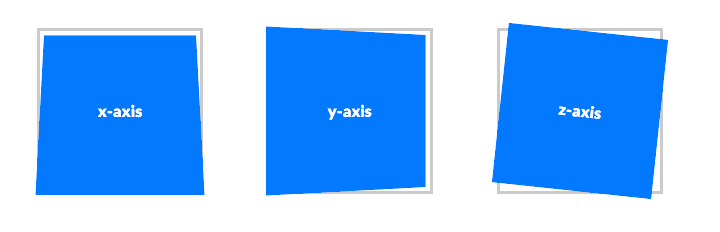

Intro to CSS Animations
Welcome!
Wifi Info
Network:
Password:
Download workshop files here
Thanks to our host Flatiron School
All slides are available at:
https://erindepew.github.io/slides/css-animations/index.html#/We will be adding a little flair to a portfolio site and creating sprite and SVG animations
Workshop Files
Workshop files contain:
- Sprites, svgs, and image assets
- index.html file with boilerplate and stubs
- styles.css and normalize.css files with stubs
- Completed demos as reference
Why Use Animations and Transitions?
Highlight interactions with microinteractions
Introduce new content

Tell a story
Overall, just try to avoid this:

Transition and Transform Inspiration
Transitions
Transitions
Smoothly interpolate between a beginning state and end state when triggered by a specific event

Transitions
button {
background-color: blue;
border-radius: 4px;
transition: all 0.3s ease 0s;
}
button:hover {
background-color: green;
border-radius: 20px;
}
Transition Properties
- transition-property
- transition-duration
- transition-delay
- transition-timing-function
Transition Cheat Sheet
| Property | Value |
|---|---|
| transition-property | CSS property |
| transition-duration | Time in seconds. Example: 1s |
| transition-delay | Time in seconds. Example: 1s |
| transition-timing-function | ease, linear, ease-in, ease-out, ease-in-out |
Transition-timing-function
Transition Triggers
- Hover
- Mouse click
- Focus state
- Active state
- Changes to the element, e.g. adding or removing a class
Develop It!
- Use transition-property to change the hover state of the images
- Add a transition-duration of 1 second
- Add a transition-delay of 100 millisecond
- Bonus: add a transition-timing-function to make it pretty
Applying transitions to a nested element
nav item
Applying transitions to a nested element
.nav-list-item:hover .subnav-list { height: 250px; }
Applying transitions to a sibling element
sibling element
nav item
also a sibling element
Applying transitions to a sibling element
.nav-list-item:hover ~ li { color: white; }
Applying transitions to an adjacent sibling element
not an adjacent sibling element
nav item
adjacent sibling element
Applying transitions to an adjacent sibling element
.nav-list-item:hover + li { color: white; }
Develop It!
- Display the subnav when you hover over the "portfolio" button
- Bonus: add a transition to all of the sibling elements when hovering over the "portfolio" button
Transforms
Transforms
Modify an object in the browser coordinate space.
Transforms
- Rotate
- Scale
- Skew
- Translate
Transform Cheat Sheet
| Property and Values | Example |
|---|---|
| transform: scale(sx, sy) | scale(2); scale(0.5, 1); |
| transform: rotate(angle) | rotate(45deg); rotate(-90deg); |
| transform: translate(ax, ay) | translate(5px); translate(0, 5px); |
| transform: skew(angle, angle) | skew(30deg, 20deg); |
Develop It!
- Using transform: translate make the buttons bounce on hover
- Using transform: scale make the images grow on hover
@keyframes
@keyframes
Define intermediate steps in a CSS animation sequence for more complex animations.

Animation Inspiration
@keyframes
- @keyframes: Defining the stages and styles of the animation
- animation property: Applying the custom @keyframes animation to a specific element using the CSS animation property
Creating a keyframe
Each @keyframes is composed of:
- Name: This should describe the animation, for example, bounceIn.
- Stages of animation: Each stage is represented as a percentage. 0% represents the beginning state and 100% represents the ending state. Multiple states can be added in between.
- CSS Properties: CSS properties defined for each stage of the animation timeline.
Creating a keyframe
@keyframes changeFontSize {
0% {
font-size: 10px;
}
30% {
font-size: 15px;
}
100% {
font-size: 12px;
}
}
Applying animation to an element
Once an @keyframes is defined, you must add these two animation properties for the animation to take effect:
- animation-name: The name of the animation, defined in the @keyframes
- animation-duration: The duration of the animation, in seconds (e.g., 5s).
Applying animation to an element
h1 { animation: changeFontSize 2s infinite; }
Additional animation properties
The two required @keyframes properties are animation-name and animation-duration but there are several more to choose from:
- animation-timing-function
- animation-delay
- animation-iteration-count
- animation-direction
- animation-play-state
Additional animation properties
| Property | Values |
|---|---|
| animation-timing-function | ease, linear, ease-in, ease-out, ease-in-out |
| animation-delay | Time in seconds. Example: 1s; |
| animation-iteration-count | Number of times. Ex: 1 or infinite |
| animation-direction | reverse, alternate, alternate-reverse |
| animation-play-state | playing, paused |
Develop It!
- Create your own @keyframes named changeColor (exact name is important!) that changes the background color to purple, then magenta, then blue
- Add the changeColor animation to the header element
Sprite Sheet Animations
Sprite sheet animations
Why use sprite sheet animations?
- Animating complex images and sequences with multiple colors
- Need the ability to "loop" and repeat certain animation sequences in a DRY way
- Most commonly used in HTML5 games
Steps()
breaks an animation or transition into segments, rather than one continuous transition from one state to another
Steps()
.sprite {
animation: play 0.8s steps(7) infinite;
}
Sprite sheet
Animating sprites
Creating a zoopraxiscope using background-position and css @keyframes

Develop It!
- Pick a character from the sprite sheet and animate it using steps(), @keyframes, and background-position
- Use animation-direction property to reverse the animation
- Bonus: change the animation to trigger on hover
SVG Animations
SVG animations
Why use SVG animations?
- Animating complex images and sequences with multiple colors
- Can change the animation based on viewport and device
- Can render at any size unlike bitmap
- SMIL (Synchronized Multimedia Integration Language) API provides additional functionality beyond CSS
What is an SVG?
- Stands for Scalable Vector Graphic
- XML file that mathematically describes shapes
- We can add classes and attributes to these entities in order to animate them!
SVG vs. Bitmap

SVG Inspiration
Anatomy of an SVG
svg: embeds SVG document, has its own x and y coordinates, height and width, and its own unique id
Anatomy of an SVG
g: groups related graphical elements together, acts as a container
Anatomy of an SVG
rect: basic svg shape representing a rectangle
Anatomy of an SVG
circle or ellipse: basic svg shape representing a circle
Anatomy of an SVG
path: defines a path of coordinates for a shape
Anatomy of an SVG
Note: unlike a regular HTML element, most of the styling behavior is contained in an SVG element's attributes. We can still modify most of them with CSS though!
List of SVG attribute typesAnimating SVG
- Create a vector graphic in Illustrator or another image editing program
- Upload to SVGOptimizer to clean up paths
- Add classes and animate!
Develop It!
- Add a css transition to change the fill color of one of the circles on hover
- Create an animation keyframe to change the position of one of the circles
Why use SMIL?
- path data attributes ("d=''") can only be animated through SMIL, not CSS
- SVGs cannot be animated via JS if embedded as an img or used as a background-image
- Simpler and more declarative than JS animations
Anatomy of an SVG
animate: specifies animations to be applied to a specific attribute of the SVG it's nested inside
One animate tag = animating one attribute
Anatomy of an SVG
xlink: specifies the target of that animation if it's not nested inside
Simple SMIL Animation
Simple SMIL Animation
| SMIL Attribute | What it does |
|---|---|
| xlink | specifying it's applied to "#my-circle" |
| attributeName | we're animating "cx" or the center-X position of our SVG |
| from | start value for the attribute |
| to | end value for the attribute |
| begin | what action begins the animation |
| fill | what happens after the animation is complete |
SMIL vs. @keyframes
| @keyframe Property | SMIL Property |
|---|---|
| animation-timing-function | calcMode: discrete, paced, or spline |
| animation-delay | begin: user interaction or other animation |
| animation-iteration-count | repeatCount: number of times or indefinite |
| animation-direction | keyTimes... sort of |
| animation-play-state | N/A |
SMIL vs. Keyframes
@keyframes => values and keyTimes
SMIL vs. Keyframes
@keyframes => values and keyTimes
@keyframes changeWidth {
0% {
width: 50px;
}
50% {
width: 490px;
}
80% {
width: 350px;
}
100% {
width: 450px;
}
}
Develop It!
- Change your circle keyframe animation to a SMIL animation using the animate tag
- Bonus: add another animate element and animate another SVG attribute
Synchonizing SMIL Animations
We can give each animation an ID
Synchonizing SMIL Animations
We can also use an animation's end as a start point for another animation beginning
Synchonizing SMIL Animations
or an animation's start as a start point for another animation beginning
Synchonizing SMIL Animations
or an animation's start plus or minus an arbitrary time as a start point for another animation beginning
Develop It!
- Add an animation to each circle
- Sync up each circle's animation with it's inner circle's animation end or beginning